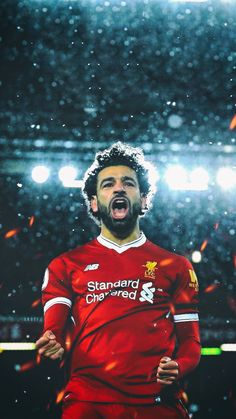

Mohamed salah는 리버풀 의 윙포워드이다. 등번호는 11번이며, 국적은 이집트이다. As로마, 첼시 등을 거쳤으면 리버풀에서 클롭 감독을 만나면서 엄청난 성장세를 보여주고 있으며 올해의 아프리카 선수상, 17/18 프리미어리그 득점왕 등을 차지하며 월드클래스의 선수로 성장중이다.
살라살라살라살라살라살라살라살라살라살라살라살라살라살라살라살라살라살라살라살라살라살라살라살라살라 살라살라살라살라살라살라살라살라살라살라살라살라살라살라살라살라살라살라살라살라살라살라살라살라살라